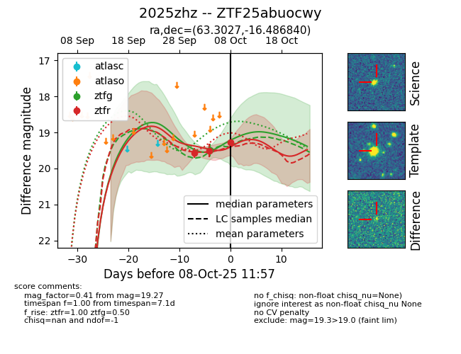
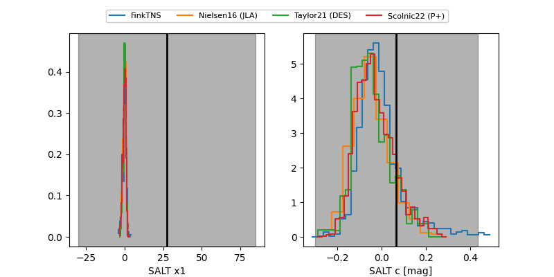

FINK: ZTF25abuocwy
Lasair: ZTF25abuocwy
ALeRCE: ZTF25abuocwy
TNS: 2025zhz
YSE: 2025zhz
ZTF25abuocwy (ztf,fink)
2025zhz (tns,yse)
equatorial (ra, dec) = (63.3027,-16.48684)
galactic (l, b) = (210.9273,-42.29009)


last ztfg=19.48, ztfr=19.27
1 ztfg, 3 ztfr detections